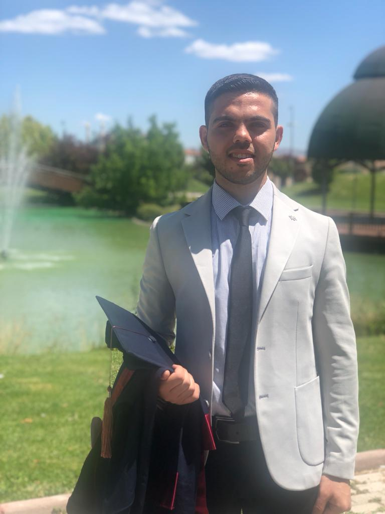

مرحباً بكم في موقعي الشخصي
أنا محمد عدرا، مهندس برمجيات شغوف بعالم التكنولوجيا، أؤمن بأن البرمجيات ليست مجرد أكواد، بل أدوات تصنع فرقًا حقيقيًا. أمتلك خبرة واسعة في تطوير الحلول البرمجية الذكية، وتحليل المشكلات المعقّدة، وتصميم أنظمة مرنة وفعّالة باستخدام أحدث التقنيات. أتقن العمل ضمن فرق ديناميكية، وأتميز بالدقة، والمرونة، والقدرة على التعلّم والتطوّر بشكل مستمر. هدفي دائمًا هو ترك بصمة حقيقية في كل مشروع أشارك فيه، وصناعة تجربة تقنية ترتقي بتطلعات المستخدم وتحقق رؤية العميل.